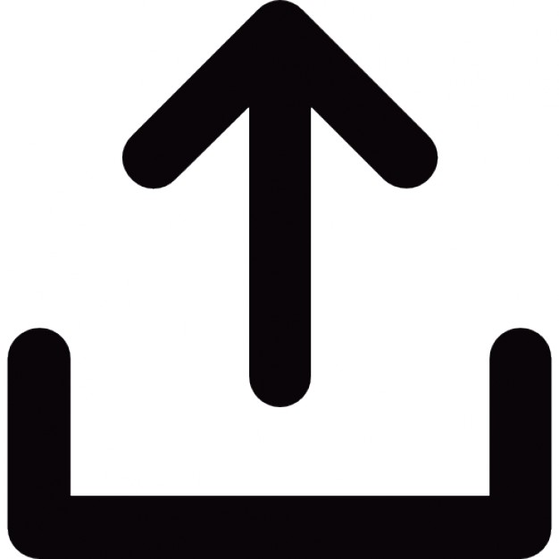

내 얼굴 유형 측정하기
Home
(current)
Link
Dropdown
Action
Another action
Something else here
Disabled
Search
Hello, world!
인공지능 얼굴유형 테스트(남자)
궁합으로 보는 나의 얼굴 유형은?

얼굴 사진을 올려놓거나 눌러서 업로드 하세요
Loading...
AI가 당신의 동물상을 분석중입니다.
다른 사진으로 재시도
goqkrtl97@naver.com
조코딩 유튜브 채널 참조